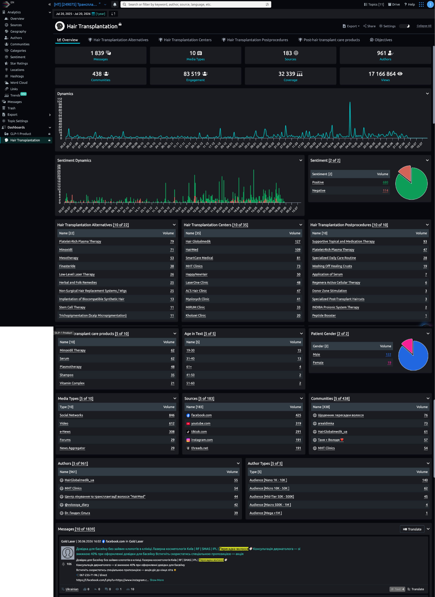
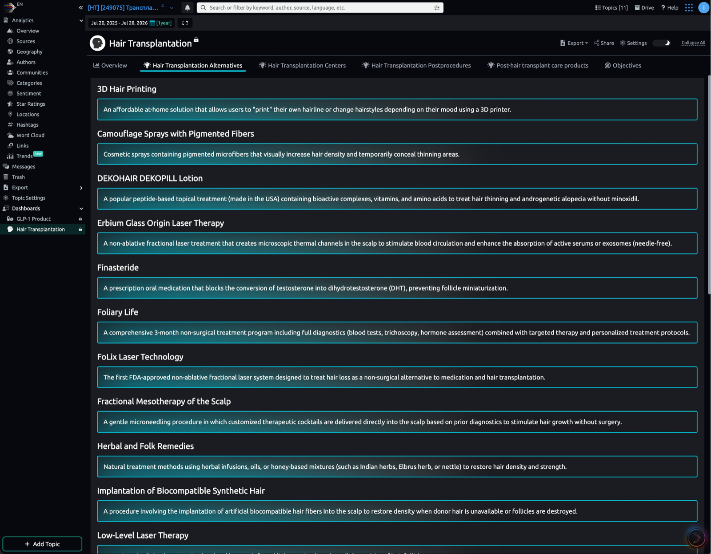
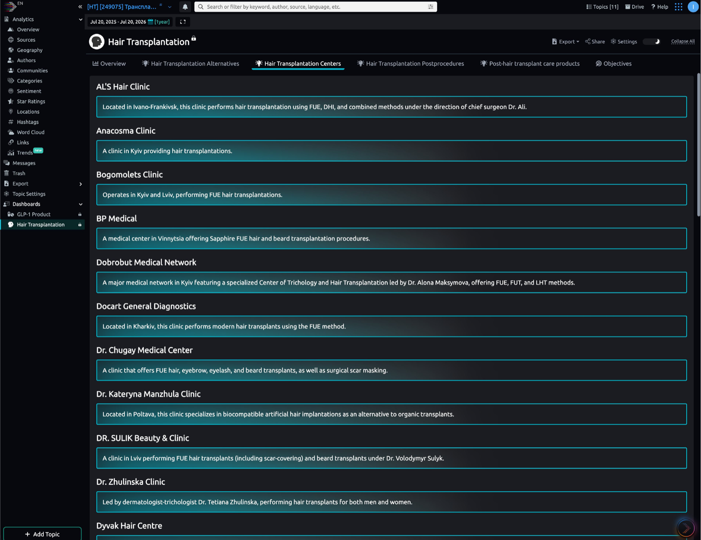
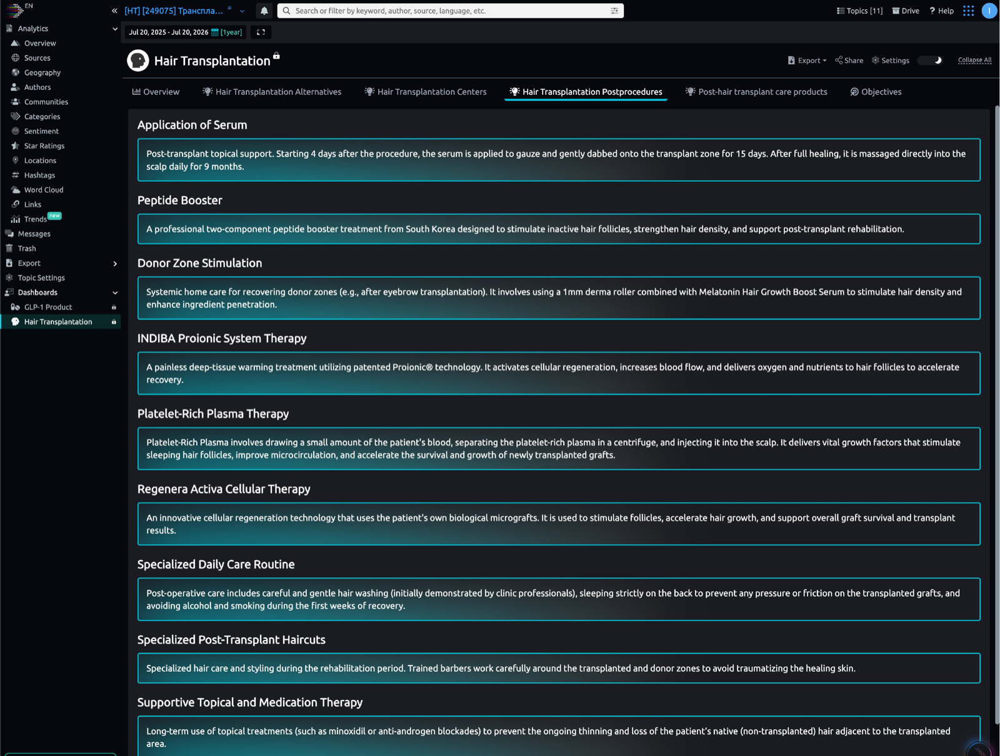
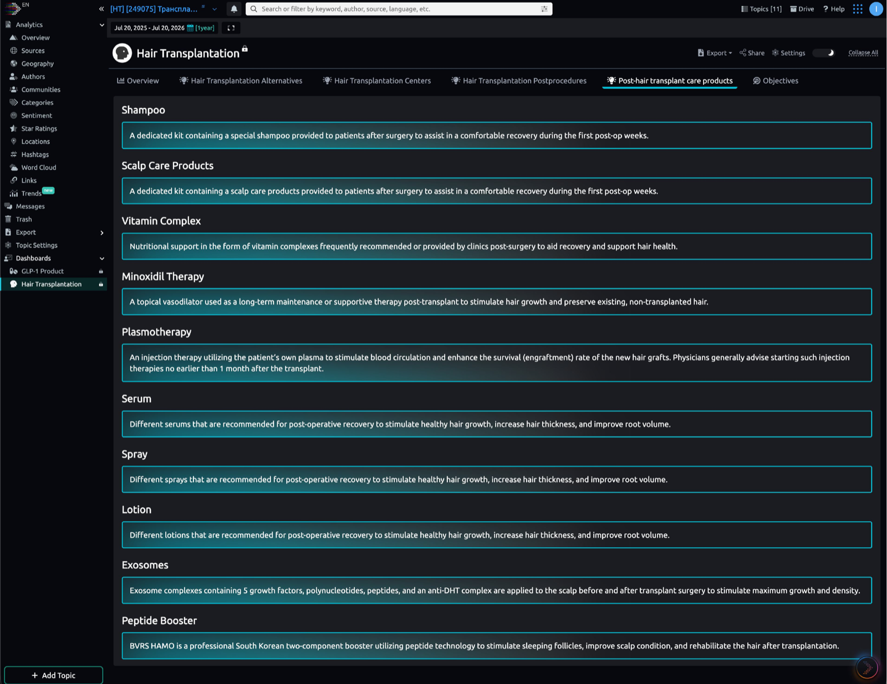
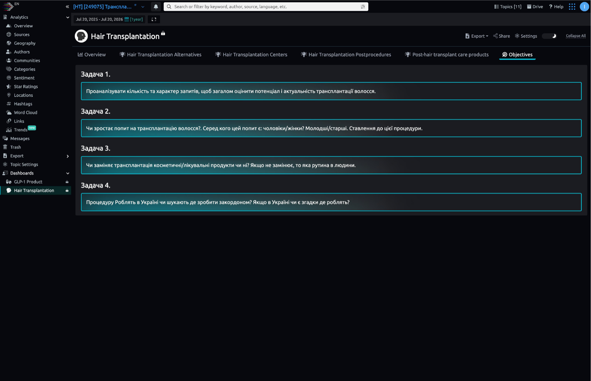

Консолидированный анализ понятности и полезности клиентского дашборда: приоритизированные проблемы, ответы на вопросы заказчика исследования, quick wins и флагманская концепция Answers-first.
Клиент сформулировал четыре исследовательских вопроса — они дословно записаны в табе Objectives самого дашборда, — но ни один экран системы прямо на них не отвечает. Ответы приходится вручную собирать из двенадцати top-N таблиц и двух графиков. Четыре из шести табов — статические глоссарии без единой цифры. Продукт организован вокруг сущностей платформы (Messages, Sources, Communities), а не вокруг решений клиента.
При этом фактура данных сильная: 183 источника, 1 839 сообщений, 961 автор, 17,1 млн просмотров, кастомная таксономия под тему, drill-down из любого числа, перевод и подсветка терминов в ленте сообщений. Проблема не в данных — ценность спрятана за интерфейсом администратора системы, тогда как покупатель — маркетолог или владелец клиники.
Метрика Messages смешивает потребительский спрос с контентом самих клиник и рекламой: топ-авторы — клиники, показанный пример сообщения — рекламная акция. Рост объёма может быть «нарисован» активностью клиник, и тогда все выводы о спросе методологически шатки. Лечится классификацией автора/намерения (пациент · клиника · медиа · реклама) — это отдельный data/ML-трек, не UI.
P0 — переосмыслить концептуально · P1 — серьёзно улучшить · P2 — полировка. Колонка «кто» — участники, независимо указавшие на проблему (C = Claude, G = GPT-5, M = Gemini, O = Олег).
| Prio | Проблема | Что делать | Кто |
|---|---|---|---|
| P0 | Objectives — тупиковый таб: вопросы клиента записаны, но без ответов, ссылок и статуса. | Answers-first: первый экран с вердиктами по 4 вопросам, цифрами, доказательствами (LLM-синтез из данных). | C·G·M |
| P0 | Табы-глоссарии без данных: 4 из 6 табов — алфавитные словари; лидер упоминаний закопан в середину списка. | Аналитические рейтинги: Volume, тренд, сентимент, доля, переход к сообщениям; определение — по клику. Либо понизить до Reference. | C·G·M |
| P0 | Нечестные малые выборки: Age n=36 (2 %), Gender n=141 (7,7 %), сентимент без ~57 % нейтрали — уверенные pie-чарты. | Подписывать n= и % покрытия, Unknown-категория, confidence-метки; pie → стекед-бары; «Insufficient data» при малой базе. | C·G·M |
| P0 | Спрос смешан с рекламой клиник: в Messages — пациенты, клиники, СМИ и промо одной метрикой. | Data-трек: классификация автора и намерения; KPI «Consumer discussions» и «High-intent requests»; контент клиник — отдельным слоем. | G |
| P0 | AI-артефакты в клиентском контенте: «3D Hair Printing дома», «Elbrus herb», побуквенные дубли описаний, грамматические ошибки. | Контент-QA таксономии и описаний (LLM-валидация + редактор); происхождение описаний («Generated summary», N упоминаний); мед. дисклеймер. | C·G |
| P1 | KPI без контекста и иерархии: 8 равновесных плиток, инвентарь (10 Media Types) вровень с перформансом (17,1 млн Views); метрики не определены. | 3–4 клиентских KPI с Δ% к сопоставимому периоду и спарклайнами; тултипы-методики Views/Coverage/Engagement; инвентарь — в Data Quality. | C·G·M |
| P1 | Годовой график дневной гранулярности: шум, нечитаемые оси, необъяснённые пики. | Недельная/месячная агрегация по умолчанию, сравнение с прошлым периодом, аннотации пиков, moving average. | C·G·M |
| P1 | Админ-интерфейс в клиентском вью: сайдбар с Trash и Topic Settings, двойная навигация, внутренние ID («[HT] [249075]»), чужой дашборд в меню. | Client View / Presentation mode: только табы исследования + компактный фильтр-бар; админ-инструменты за ролью. | C·G·M |
| P1 | Нет пути «вывод → доказательство»: графики и таблицы оторваны от ленты сообщений. | Evidence drawer: клик по любому сегменту/строке открывает выборку сообщений с фильтрами и кнопкой «ошибка классификации». | G (+C) |
| P1 | Языковой микс: EN-интерфейс, UA-вопросы, смешанные источники. | Единая локаль клиентского слоя (UA для этого клиента), переключатель; оригинал сообщения — в drawer. | C·G |
| P1 | Лента сообщений — простыня с глобальным фильтром: любой клик перестраивает весь дашборд; локально ленту не отфильтровать («взять и резко отсортировать негатив»). | Локальные фильтры ленты (продукт · тип · сентимент) без перестройки остального; глобальный фильтр — отдельным явным действием. | O (+G) |
| P1 | Доверие к интерактиву — баги: свёрнутые Messages не развернуть (разворачивалку перекрывает кнопка AI-копайлота); фильтр по Hair Globalmedik оставляет в таблице SmartCare Medical без объяснения (co-tagging выглядит поломкой). | Починить z-index/позицию копайлота; у co-tagged результатов — явная подпись «сообщения с обеими метками» или счётчик пересечения. | O |
| P1 | Пересекающаяся таксономия: Peptide Booster в двух табах, Minoxidil в трёх ролях, PRP ≈ Plasmotherapy. | Онтология по этапам customer journey; тип сущности отдельно от этапа пути. | G (+C) |
| P2 | Неоновый glow-стиль: светящаяся рамка у каждого блока — всё одинаково «важно», утомляет, выглядит датировано. | Акцент только для selected state и ключевых данных; карточки — фоном и типографикой; светлая тема для экспорта. | C·G·M |
| P2 | Слабые визуализации списков: 8 однотипных таблиц «имя-объём», pie для двух категорий. | Bar gauges в ячейках (объём относительно лидера), стекед-бары вместо pie, «Показать все 22 →» вместо «[10 of 22]». | M (+C) |
| P2 | Микрокопирайт и подписи: «Age in Text [5 of 5]», «Volume» без объекта, «Динамика» без периода, оси без годов на двухлетнем окне, одинаковые глобусы-иконки, мелкие серые подписи, смысл только цветом. | Клиентские формулировки («Volume» → «Messages»), заголовки виджетов «объект · период», годы на осях и ховерах, иконки медиатипов, крупнее кегль, контраст, паттерны в дополнение к цвету. | G·O (+C) |






Сейчас: объём (1 839) и динамика есть, но «характер» не раскрыт: не видно, сколько сообщений — реальные вопросы пациентов, сколько — реклама. Объём ≠ потенциал.
Целевой экран: хедлайн-вердикт («потребительский интерес: высокий/умеренный/низкий, X уникальных обсуждений, Y % high-intent») + структура запросов (цена · метод · риски · клиника · восстановление · зарубеж) treemap-ом + динамика consumer/provider + 5 характерных сообщений.
Сейчас: дневная линия за год не доказывает рост; Gender (n=141) и Age (n=36) нерепрезентативны и поданы без caveat; сентимент не измеряет отношение именно к процедуре.
Целевой экран: вердикт «спрос вырос/снизился на X %» с сопоставимым периодом · демография только с базой, Unknown и confidence · шкала отношения (рассматривает · доверяет · сомневается · боится · уже сделал) · драйверы и барьеры.
Сейчас: альтернативы и продукты — отдельные словари без единой связи с решением о пересадке.
Целевой экран: co-mention анализ (пересадка × minoxidil/PRP/уход — сеть совместных упоминаний или диаграмма Венна) · категоризация Replacement / Complement / Before / After · маршрут пациента с популярными последовательностями рутин · цитаты-доказательства.
Сейчас: таб Centers перечисляет украинские клиники алфавитом; гео-разрез спрятан в сайдбаре и на Overview не выведен.
Целевой экран: сплит Ukraine / Abroad / Undecided / Already done · карта или flow «Украина → страны» · Share of Voice клиник с ±сентиментом (данные уже есть: Hair Globalmedik 127 · HairMed 109 · SmartCare 81) · причины выбора (цена · доверие · безопасность · логистика).
Не quick wins (отдельный data/ML-трек): надёжное отделение потребителей от клиник, intent-классификация, aspect-based сентимент, гео-намерение, реконструкция рутины. Это доработка классификации, а не UI.
Все три модели независимо предложили одно и то же. Первый экран продукта — четыре блока по вопросам клиента. В каждом: вердикт одним предложением → уровень уверенности (n, % классифицировано) → одна решающая визуализация → три драйвера → реальные сообщения-доказательства → business implication. Вся остальная аналитика — глубина второго клика.
Поправка Олега: компактность текущего обзора — ценность («картину вижу быстро»). Answers-first — слой поверх плотной структуры, а не дробление продукта на четыре отдельных экрана: первый экран отвечает, существующий Overview остаётся глубиной.
Пример блока (формат GPT-5): «Органический потребительский спрос вырос на 18 %, но рост общего объёма в основном связан с активностью клиник» · Medium confidence · 312 consumer messages · 68 % classified · график consumer vs provider · драйверы: цена, восстановление, выбор страны · [5 сообщений] · «клинике стоит усиливать контент о стоимости и реальных результатах, а не общий awareness».
Почему это больше, чем UX-фикс: Semantic Force уже использует LLM (описания в глоссариях сгенерированы) — ту же LLM направить на синтез выводов с цитатами. Это переупаковка позиционирования всей линейки дочерних решений: из «система с данными» в «сервис, который отвечает на вопросы бизнеса» — и главный дифференциатор в продажах.
| Трек | Состав | Ресурс |
|---|---|---|
| A · UI | Quick wins (раздел 05) → Answers-экран на существующих данных (вердикты пишет аналитик) → редизайн глоссарий-табов в рейтинги → Client View → светлая тема + экспорт Answers в PDF-деку. | дизайнер + фронтендер, 4–6 недель суммарно |
| B · Data/ML | Классификация автора и намерения (consumer vs provider vs ad) → high-intent KPI → гео-намерение (Ukraine/abroad/undecided) → co-mention анализ → LLM-автогенерация вердиктов Answers с доказательствами. | data-команда SF, параллельно, не блокирует трек A |
Упущения, добавленные оркестратором поверх трёх мнений: экспорт-флоу (клиент несёт выводы руководству — светлый PDF в один клик), бенчмарк конкурентов (YouScan / Brandwatch / Talkwalker — как у них устроен insights-слой), mobile-читаемость Answers-экрана, onboarding первой сессии.
Обе внешние модели получили одинаковый промпт и полный PDF со скриншотами. Ниже — вердикты и уникальные вклады; полные тексты (5,7–22 тыс. знаков) — в артефактах сессии.
Вердикт: «Это не клиентский продукт, а внутренний analyst workspace со справочными вкладками. Интерфейс создаёт ощущение статистической определённости там, где неполные выборки и смешение спроса с рекламой. Продукт организован вокруг сущностей платформы вместо решений клиента».
Уникальный вклад: методология — разделение потребительского спроса и контента клиник/рекламы (главная находка сессии) · происхождение медицинских утверждений и дисклеймеры · онтология таксономии по customer journey · evidence drawer с кнопкой «ошибка классификации» · confidence-статусы (High/Medium/Low/Insufficient) · честный список «что НЕ является quick win».
Вердикт: «Подмена аналитики сырым экспортом базы и статичными глоссариями: на неподготовленного маркетолога вываливают пульт управления дата-сайентиста. Тяжёлый "хакерский" интерфейс без контекста метрик — клиент сам ищет инсайты среди однообразных таблиц».
Уникальный вклад: конкретный виз-словарь редизайна — Treemap структуры болей/запросов · матрица сентимент × пол × возраст · Co-occurrence network / диаграмма Венна для «пересадка × уход» · тепловая карта гео + Share of Voice клиник с ±сентиментом · bar gauges прямо в ячейках таблиц · сгруппировать Gender/Age/Author Types в блок «Audience Profile».
Вердикт: «Дашборд показывает данные, а не ответы. Вопросы клиента записаны в самом продукте — и ни один экран на них не отвечает; большая часть навигации ведёт в справочник, а не в аналитику. Продукт прячет свою главную ценность за интерфейсом администратора».
Уникальный вклад: контент-QA как P0 (артефакты AI-генерации — «3D Hair Printing дома», «Elbrus herb», побуквенные дубли — прямой риск доверия) · зависший тултип и прочие QA-баги · повторы «Hair Transplantation» в табах · список «что уже хорошо и надо сохранить» (фактура источников, highlight, Translate, drill-down, сам факт фиксации Objectives).
Вердикт: «Табы дают понятную навигацию, и картину в целом вижу быстро — это хорошо. Но подача однообразная, нет главного и второстепенного. И постоянно не могу понять одно: это хорошо или это плохо? Живая тема или нет? Захожу в "инсайты" — и не знаю, насколько они инсайты. Владелец клиники зашёл — и что?»
Уникальный вклад: два бага интерактива (нераскрываемый collapse Messages — перекрыт кнопкой AI-копайлота; фильтр по клинике, оставляющий чужие строки без объяснения) · локальные фильтры ленты сообщений вместо глобальной перестройки дашборда · годы на осях и ховерах · заголовки виджетов с объектом и периодом · «Volume» → «Messages» · иконки медиатипов · Objectives и инсайты не должны выглядеть одинаково.
Контрапункт к синтезу: компактность обзора — ценность («нет разбиения на огромное количество разделов»). Answers-first строить слоем поверх текущей плотной структуры, а не дробить продукт на отдельные answer-экраны. Плотность — фича, беспорядок — баг.